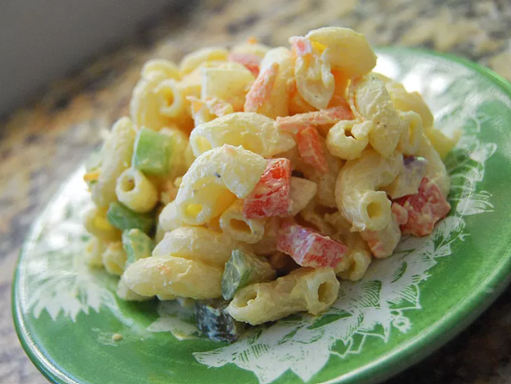

Macaroni Salad

Description
This recipe is easily multiplied for a crowd. Everyone in my family asks me to bring this to our functions. I even make it for weddings. Sometimes I use a mixture of different kinds of pasta, especially if I only have a little of this kind or that. Depending on what type of macaroni used, more dressing may be required. The recipe calls for red onion, but sweet onion is great, too
Ingredients
- 2 cups elbow macaroni, uncooked
- 1 cup mayonnaise
- 2 tablespoons apple cider vinegar
- 1 tablespoon Dijon mustard
- 1 teaspoon sugar
- Salt and pepper to taste
- 1 cup diced celery
- 1/2 cup chopped red bell pepper
- 1/4 cup finely chopped red onion
- 2 hard-boiled eggs, chopped (optional)
Steps
- Cook the macaroni according to package instructions. Drain and rinse under cold water to cool.
- In a large bowl, whisk together mayonnaise, vinegar, mustard, sugar, salt, and pepper.
- Add the cooled macaroni, celery, bell pepper, red onion, and eggs (if using) to the bowl.
- Stir until everything is evenly coated with the dressing.
- Cover and refrigerate for at least 1 hour to allow flavors to meld.
- Stir before serving and adjust seasoning if needed.
Home